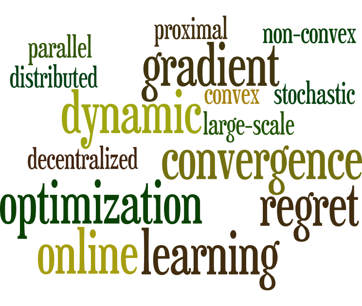

Bio:Yawei Zhao (Chinese name: 赵亚威) is now working as an independent researcher in Beijing, China. He received the Ph.D degree in Computer Science from the National University of Defense Technology, China in 2020. He received his B.E. degree and M.S. degree in Computer Science from the National University of Defense Technology, China, in 2013 and 2015, respectively. His research interests include photo-acoustic imaging analysis, and numerical optimization algorithms. He also has interests in developing medical/health applications by using machine learning methods. |

Contact me:E-mail: csyawei.zhao@gmail.com; zhaoyawei09@163.com. Phone: +86 15570864583. Other links: Yawei's Google Scholar; Yawei's Research Gate. |
It is my honor to get the Kwang-Hua Scholarship. Thanks to Kwang-Hua Education Foundation.
I finish the visiting in Ji Liu's team at University of Rochester. Thanks to Ji and all friends. I have learned a lot at UR. This is one of my best memories.
I am going to visit Ji Liu's team at University of Rochester, and will continue my Ph.D project under his guidance for the next two years. Thanks to CSC Scholarship.
I am going to visit Jun Zhu's team at Tsinghus University, and will continue my Ph.D project under his guidance for the next three months.
The acceleration is significant. For example, we conduct the variance reduced k-means clustering methods on the dataset: Pittsbour. Then we obtain more than 5x speedup.